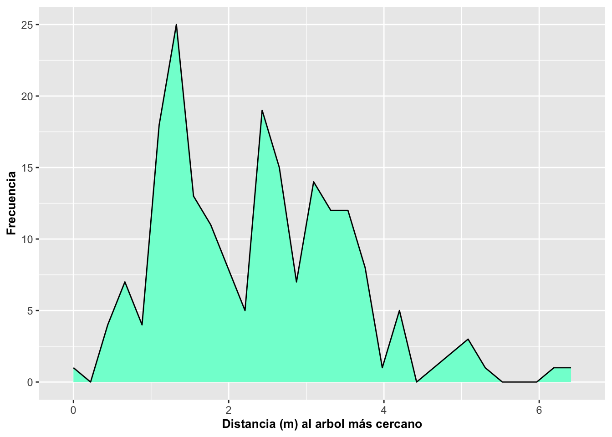

Geom_area_densidad_freqpoly
Fecha de la ultima revisión
## [1] "2023-07-04"

Gráficos de área, densidad y histograma de linea con geom_dotplot, geom_density y geom-freqpoly
Librerías necesarias para producir los gráficos que siguen
library(ggversa) # paquete con los datos
library(tidyverse) # paquete que instala múltiples paquetes
library(gridExtra) # Un paquete para organizar las figuras de ggplot2
library(janitor)Gráfico de área con geom_area
Sección Gráfico De Área
El gráfico de área es análogo a un histograma o a un gráfico de barras. En la figura a continuación se observa cómo la cantidad en X cambia en frecuencia con respecto a Y a lo largo del rango de la variable X. Se observa a continuación que los datos no están agrupados en barras como cuando se usa geom_histogram pero representados como un área continua. Note que en contraste a un histograma, los cambios de frecuencia son suavizados y no discretos.
DW=dipodium
DW=clean_names(DW)
a=ggplot(DW, aes(distance))
a+geom_area(stat="bin", fill="aquamarine", color="black")+
labs(x="Distancia", y="Frecuencia")+
theme(axis.title=element_text(size=10,face="bold"))
En este siguiente gráfico se cambia el color de linea que sigue el contorno del área. Para hacer este cambio se puede identificar el tipo de linea con linetype, el color con color, el grosor de la linea con size y la intensidad del color con alpha.
a=ggplot(DW, aes(distance))
a+geom_area(stat="bin", fill="steelblue1",
linetype="twodash", color="black", size=0.5, alpha=0.1)+
labs(x="Distancia", y="Frecuencia")+
theme(axis.title=element_text(size=10,face="bold"))
Los tipos de linetype
Vea las alternativas de “linetype” en este enlace linetype. Algunas de estas lineas se pueden llamar usando un nombre “blank”, “solid”, “dashed”, “dotted”, “dotdash”, “longdash”, “twodash”, o numeración “1F”, “F1”, “4C88C488”, “12345678.
Ahora al gráfico siguiente, se le cambia el color de la línea a negro a la vez que se le cambia el estilo de la línea con linetype y el grosor de la misma con size.
a=ggplot(DW, aes(distance))
a+geom_area(stat="bin", fill="steelblue1",
linetype="4C88C488", color="black", size=.5, alpha=0.5)+
labs(x="Distancia", y="Frecuencia")+
theme(axis.title=element_text(size=10,face="bold"))
geom_area con múltiples grupos
Finalmente, en el siguiente gráfico, se muestran los datos de la frecuencia de camas en hospitales por cada 1000 habitantes en diferentes años.
tail(Camas_Hospital, n=6)## Pais Year Poblacion Camas
## 129 Turkey 2006 68704721 2.7000
## 130 Turkmenistan 2006 4801594 4.3331
## 131 Ukraine 2006 46787750 8.7000
## 132 United States 2006 298379912 3.1000
## 133 Uruguay 2006 3331041 2.9000
## 134 Yemen, Rep. 2006 21093973 0.7000a=ggplot(Camas_Hospital, aes(Camas, fill=factor(Year)))
a+geom_area(stat="bin",bins=60, alpha=0.5)+
xlab("Número de camas por \n cada 1000 habitantes")+
ylab("Frecuencia")+
scale_y_continuous(breaks=c(0,1,2,3,4,5, 6,7,8,9))+
scale_x_continuous(breaks=c(0:15))+
theme(axis.title=element_text(size=10,face="bold"))+
facet_wrap(~Year)
Camas_Hospital %>%
group_by(Year) %>%
count()## # A tibble: 2 × 2
## # Groups: Year [2]
## Year n
## <int> <int>
## 1 1996 67
## 2 2006 67La función densidad aes(y=..density..)
Uno puede utilizar la opción stat a la vez que identifica el eje de Y para visualizar la densidad y no la frecuencia de los datos con la siguiente modificación aes(y=..density..). Esto modifica la visualizar del gráfico a densidad en los datos en vez de mostrar el conteo/frecuencia para cada grupo. Si uno compara las dos gráficas anteriores a estas nuevas gráficas uno observa que la densidad de camas en hospitales por 100,000 cambio con los años habitantes, hubo un aumento en densidad (proporcionalmente más camas en 2006 por habitantes). Nota que no hay un pico cerca de uno en 1996, pero en 2006 la distribución esta más dispersado entre los valores y no concentrado cerca de uno.
Camas_Hospital## Pais Year Poblacion Camas
## 1 Armenia 1996 3173425 7.1300
## 2 Australia 1996 18311000 8.5000
## 3 Austria 1996 7959017 9.3000
## 4 Azerbaijan 1996 7763000 9.8100
## 5 Bahamas, The 1996 283792 3.9400
## 6 Barbados 1996 265940 7.5600
## 7 Belarus 1996 10160000 12.2700
## 8 Belize 1996 213674 2.1300
## 9 Bolivia 1996 7717445 1.6700
## 10 Bulgaria 1996 8362826 10.4700
## 11 Burkina Faso 1996 10372809 1.4200
## 12 Canada 1996 29671900 4.6000
## 13 Chile 1996 14396020 2.6700
## 14 China 1996 1217550000 2.5500
## 15 Colombia 1996 38049040 1.4600
## 16 Costa Rica 1996 3596733 1.7500
## 17 Croatia 1996 4494000 6.1900
## 18 Cuba 1996 10955372 5.1300
## 19 Egypt, Arab Rep. 1996 63595629 2.1000
## 20 El Salvador 1996 5643363 1.6500
## 21 Estonia 1996 1415594 7.9000
## 22 Finland 1996 5124573 9.2000
## 23 France 1996 59753098 8.8000
## 24 Georgia 1996 4616100 5.6700
## 25 Germany 1996 81914831 9.6000
## 26 Greece 1996 10608800 4.9000
## 27 Guyana 1996 730193 3.8700
## 28 Hungary 1996 10311238 8.8000
## 29 Iran, Islamic Rep. 1996 61306632 1.6000
## 30 Ireland 1996 3637510 5.1000
## 31 Israel 1996 5692000 6.0300
## 32 Italy 1996 56860281 6.5000
## 33 Jamaica 1996 2509923 2.1200
## 34 Japan 1996 125757000 15.2000
## 35 Kazakhstan 1996 15577894 10.3300
## 36 Korea, Rep. 1996 45524681 4.6000
## 37 Kyrgyz Republic 1996 4628400 8.4100
## 38 Latvia 1996 2457222 10.4400
## 39 Lithuania 1996 3601613 10.8800
## 40 Macedonia, FYR 1996 1958303 5.2000
## 41 Malaysia 1996 21260881 2.0100
## 42 Malta 1996 372687 5.7800
## 43 Mexico 1996 96181710 1.2000
## 44 Moldova 1996 3667748 12.1300
## 45 Nepal 1996 21902534 0.1600
## 46 Nicaragua 1996 4700777 1.4800
## 47 Norway 1996 4381336 4.0000
## 48 Paraguay 1996 4870695 1.3400
## 49 Poland 1996 38624370 5.5000
## 50 Portugal 1996 10063945 4.0000
## 51 Romania 1996 22619004 7.5600
## 52 Russian Federation 1996 148160042 11.6300
## 53 Slovak Republic 1996 5373361 8.3000
## 54 Slovenia 1996 1988628 5.6600
## 55 Spain 1996 39478186 4.3000
## 56 St. Lucia 1996 148962 3.3800
## 57 Suriname 1996 453653 3.7400
## 58 Syrian Arab Republic 1996 14736209 1.5000
## 59 Tajikistan 1996 5862224 7.4700
## 60 Trinidad and Tobago 1996 1258365 5.1100
## 61 Tunisia 1996 9089300 2.0000
## 62 Turkey 1996 59451488 2.5000
## 63 Turkmenistan 1996 4267690 8.0100
## 64 Ukraine 1996 51057189 10.8400
## 65 United States 1996 269394000 3.9000
## 66 Uruguay 1996 3248039 4.3900
## 67 Yemen, Rep. 1996 15834747 0.6900
## 68 Armenia 2006 3002161 4.4000
## 69 Australia 2006 20697900 3.9700
## 70 Austria 2006 8268641 7.6496
## 71 Azerbaijan 2006 8484550 8.1000
## 72 Bahamas, The 2006 335801 3.2000
## 73 Barbados 2006 275040 6.6000
## 74 Belarus 2006 9604000 11.2000
## 75 Belize 2006 290751 1.3000
## 76 Bolivia 2006 9283345 1.1000
## 77 Bulgaria 2006 7699020 6.2000
## 78 Burkina Faso 2006 13834195 0.9000
## 79 Canada 2006 32570505 3.4000
## 80 Chile 2006 16279728 2.3000
## 81 China 2006 1311020000 2.2300
## 82 Colombia 2006 43835744 1.0000
## 83 Costa Rica 2006 4308790 1.3000
## 84 Croatia 2006 4440000 5.5000
## 85 Cuba 2006 11275199 4.9000
## 86 Egypt, Arab Rep. 2006 76274285 2.1020
## 87 El Salvador 2006 5967556 0.9000
## 88 Estonia 2006 1346810 5.6000
## 89 Finland 2006 5266268 7.0000
## 90 France 2006 63621376 7.2000
## 91 Georgia 2006 4136000 3.7000
## 92 Germany 2006 82376451 8.3000
## 93 Greece 2006 11020362 4.8000
## 94 Guyana 2006 743705 2.5000
## 95 Hungary 2006 10071370 7.9000
## 96 Iran, Islamic Rep. 2006 70923164 1.4000
## 97 Ireland 2006 4273591 5.3000
## 98 Israel 2006 7053700 6.0000
## 99 Italy 2006 58143979 3.9000
## 100 Jamaica 2006 2653042 2.0000
## 101 Japan 2006 127854000 13.9800
## 102 Kazakhstan 2006 15308084 7.8000
## 103 Korea, Rep. 2006 48371946 8.6400
## 104 Kyrgyz Republic 2006 5218400 5.1000
## 105 Latvia 2006 2218357 7.6000
## 106 Lithuania 2006 3269909 8.0000
## 107 Macedonia, FYR 2006 2047330 4.6000
## 108 Malaysia 2006 26263048 1.9000
## 109 Malta 2006 405308 7.6129
## 110 Mexico 2006 111382857 1.6000
## 111 Moldova 2006 3585209 6.3000
## 112 Nepal 2006 25794344 5.0000
## 113 Nicaragua 2006 5450217 1.0000
## 114 Norway 2006 4660677 4.1000
## 115 Paraguay 2006 5882797 1.3000
## 116 Poland 2006 38141267 5.2000
## 117 Portugal 2006 10522288 3.5000
## 118 Romania 2006 21193760 6.5000
## 119 Russian Federation 2006 143049528 9.7000
## 120 Slovak Republic 2006 5373054 6.8100
## 121 Slovenia 2006 2006868 4.8000
## 122 Spain 2006 44397319 3.4000
## 123 St. Lucia 2006 167656 2.9000
## 124 Suriname 2006 495953 3.3000
## 125 Syrian Arab Republic 2006 18728200 1.4000
## 126 Tajikistan 2006 6949566 6.1000
## 127 Trinidad and Tobago 2006 1303141 2.7000
## 128 Tunisia 2006 10127900 1.9000
## 129 Turkey 2006 68704721 2.7000
## 130 Turkmenistan 2006 4801594 4.3331
## 131 Ukraine 2006 46787750 8.7000
## 132 United States 2006 298379912 3.1000
## 133 Uruguay 2006 3331041 2.9000
## 134 Yemen, Rep. 2006 21093973 0.7000a=ggplot(Camas_Hospital, aes(Camas, fill=factor(Year)))
a+geom_area(aes(y=..density..),stat="bin", alpha=0.5)+
xlab("Número de camas por cada 1000 habitantes")+
ylab("Densidad")+
theme(axis.title=element_text(size=10,face="bold"))
Opciones y Parametros de geom_area:
ggplot (el archivo de datos, aes(la variable continua)) +geom_area(stat= bin, x, y, alpha, color, fill, linetype, size)
- alpha: la intensidad del color
- color: el color de la línea alrededor del área
- fill: el color del área
- linetype: representa el estilo de línea
- size: representa el grosor de la línea
- stat: el método predeterminado es {identity}, que representa los datos, o la transformación estadística
Gráfico de densidad con geom_density
Un gráfico de densidad, también conocido como una función de probabilidad de densidad, pdf o probability density function en inglés, se utiliza con variables que contienen datos continuos. La función de densidad es continua en el rango de los valores, y la suma de todas la probabilidades es igual a uno. Vimos anteriormente que se puede visualizar la densidad también con geom_area y geom_histogram. La función geom_density facilita la producción del gráfico y amplía las alternativas como se explica en breve.
¿Qué es un kernel?
Estimar la densidad de los datos en un gráfico requiere seleccionar
un parámetro, un kernel, para suavizar la distribución.
El más utilizado es el gaussian, que representa la
distribución normal o conocida comúnmente como distribución de forma de
campana. Si no se especifica cuál kernel utilizar, la
distribución normal es la predeterminada; por ejemplo, cuando se
especifica geom_density() sin ninguna otra
opción.
Otra alternativa es usar geom_density(kernel =
c(kernel={gaussian}), u otras alternativas. Otros parámetros
para kernel son:
- rectangular,
- triangular,
- epanechnikov,
- biweight,
- cosine,
- optcosine,
- gaussian
EL kernel es un tipo especial de función de probabilidad de densidad que tiene ciertas propiedades específicas, ya sea que esta no sea negativa y con valores reales de manera tal que el gráfico salga simétrico, y que la suma de la integral sea igual a uno. Se añadió también geom_density para comparar el resultado de las dos funciones.
Note que en el gráfico siguiente se usó el parámetro alpha=0.4. Este modifica la transparencia del color azul del parámetro fill=blue. La intensidad de alpha=0.4 puede variar de 0 a 1, tal como se ha explicado anteriormente. En el ejemplo a continuación se utilizan los datos de la Dipodium rosea otra vez.
a=ggplot(DW, aes(distance))
a+geom_area(aes(y=..density..),stat="bin", alpha=0.5)+
geom_density(kernel = c(kernel="gaussian"),
alpha=0.4, fill="blue")+
labs(x="Distancia", y="Densidad")+
theme(axis.title=element_text(size=10,face="bold"))#ggsave("Distance_to_tree.jpeg") #.tiff, .pngx=rnorm(10, 10, 4)
x=data_frame(x)
a=ggplot(x, aes(x))
a+geom_area(aes(y=..density..),stat="bin", alpha=0.5)+
geom_density(kernel = c(kernel="gaussian"),
alpha=0.4, fill="blue")+
labs(x="valus", y="Densidad")+
theme(axis.title=element_text(size=10,face="bold"))
geom_density y datos simulados
La función de geom_density se puede entender mejor si se evalúa con datos simulados. Vamos a continuación a simular datos con diferentes tamaños de muestra para visualizar las densidades. En la simulación a continuación se crean 4 data frame con 2000, 500, 50 y 10 datos respectivamente con la función rnorm. Naturalmente, lo que se observa es que si los datos provienen de una distribución normal, entre más datos se incluyan, la distribución correspondiente se acerca más a como debe lucir una distribución normal. Pero, lo contrario es que con pocos datos, es probable que la densidad no se asemeje a la distribución teórica (normal).
a=rnorm(20000, 0, 1)
a=as.data.frame(a)
a=ggplot(a, aes(a))+
geom_density(kernel = c(kernel="gaussian"),
alpha=0.4, fill="yellow")+
labs(y="Densidad")+
theme(axis.title=element_text(size=10,face="bold"))
b=rnorm(500, 0, 1)
b=as.data.frame(b)
b=ggplot(b, aes(b))+
geom_density(kernel = c(kernel="gaussian"),
alpha=0.4, fill="red")+
labs(y="Densidad")+
theme(axis.title=element_text(size=10,face="bold"))
c=rnorm(50, 0, 1)
c=as.data.frame(c)
c=ggplot(c, aes(c))+
geom_density(kernel = c(kernel="gaussian"),
alpha=0.4, fill="blue")+
labs(y="Densidad")+
theme(axis.title=element_text(size=10,face="bold"))
d=rnorm(10, 0, 1)
d=as.data.frame(d)
d=ggplot(d, aes(d))+
geom_density(kernel = c(kernel="gaussian"),
alpha=0.4, fill="grey")+
labs(y="Densidad")+
theme(axis.title=element_text(size=10,face="bold"))
Opciones y Parametros de geom_density:
ggplot(el archivo de datos, aes(la variable continua))
- geom_density(kernel= {…}), x, y, alpha, color, fill, linetype, size,
weight
- … representa el parámetro deseado; ej. gaussian, triangular, rectangular, etc.
- alpha: la intensidad del color
- fill: el color del área
- color: el color de la línea alrededor del área
- linetype: representa el estilo de línea
- size: representa el grosor de la línea
- weight: para modificar el valor original; entonces no sería, por ejemplo, el conteo o suma de los valores si no un valor ponderado (promedio ponderado)
- geom_density(kernel= {…}), x, y, alpha, color, fill, linetype, size,
weight
Gráfico de frecuencia de polígono con geom_freqpoly
El gráfico de frecuencia de polígono es similar al gráfico de área y de densidad, la diferencia es que no se rellena el área con color. También se puede cambiar la cantidad de compartimentos usando binwidth. En el gráfico de polígono, es solamente la línea la que gráficamos y no hay parámetro de fill del área debajo de la línea.
a=ggplot(DW, aes(distance))
a+geom_freqpoly(binwidth=.1, color="#e3cc36")+ # Nota como seleccionar el color con "color picker" en el web.
labs(x="Distancia (m)", y="Frecuencia")+ # labels = labs
theme(axis.title=element_text(size=14,face="italic"))
Se modifica otras opciones como sigue: intensidad del color con alpha, el tipo de línea con linetype y el grosor de la línea con size tal como se muestra a continuación.
DW%>%
drop_na()%>%
ggplot(aes(distance, colour=species_name))+
geom_freqpoly(alpha=1.0, size=1.0, binwidth=.1, linetype="longdash")+
labs(x="Distancia", y="Frecuencia")+
theme(axis.title=element_text(size=14,face="bold"))
# ggsave("the_name_of_my_figure.tiff") # .png, .tiff, .pdf, .jpeg
DW## # A tibble: 1,365 × 21
## tree_number tree_species dbh plant_number ramet_number distance orientation
## <int> <chr> <dbl> <int> <int> <dbl> <dbl>
## 1 1 E.o 75 1 1 2.47 40
## 2 1 E.o 76 2 1 1.97 50
## 3 2 E.o 76 3 1 1.95 350
## 4 3 E.o 58 4 1 3.24 210
## 5 4 E.o NA 5 1 0.85 80
## 6 5 E.o 59 6 1 2.62 160
## 7 5 E.o 59 7 1 2.82 170
## 8 6 E.o 8 8 1 3.12 245
## 9 7 E.o 11.5 9 1 1.12 208
## 10 8 E.o 8.5 10 1 0.75 360
## # ℹ 1,355 more rows
## # ℹ 14 more variables: number_of_flowers <dbl>, height_inflo <dbl>,
## # herbivory <chr>, row_position_nf <int>, number_flowers_position <int>,
## # number_of_fruits <int>, perc_fr_set <dbl>, pardalinum_or_roseum <chr>,
## # fruit_position_effect <int>, frutos_si_o_no <int>,
## # p_or_r_infl_lenght <chr>, num_of_fruits <int>, species_name <chr>,
## # cardinal_orientation <int>Opciones y Parametros de geom_freqpoly
ggplot(el archivo de datos, aes(la variable continua))
- geom_freqpoly(stat={bin}, x, y, alpha, color, linetype, size)
- alpha: la intensidad del color
- color: el color de la línea alrededor del área
- linetype: representa el estilo de línea; vea sección
- size: representa el grosor de la línea
- Actividad Usar el data set “dipodium” en el paquete “ggversa”.
Presenta un gráfico de la frecuencia de flores por
planta con geom_freqpoly.
- Cambia el color de la linea
- Cambiar la información de los ejes para texto más relevante
- Cambiar la intensidad de color de la linea
- Cambiar el tipo de linea